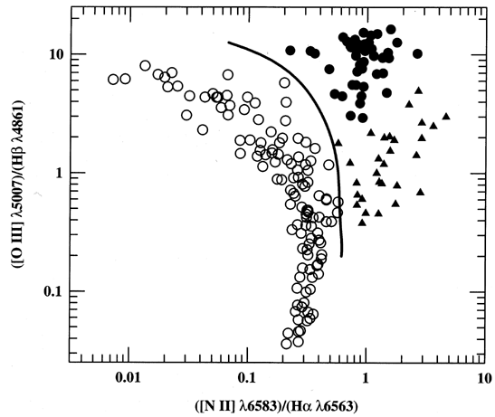

Understanding BPTs#
Now that we have covered the PSB side of our project, let’s discuss how we will identify Active Galactic Nucleis (AGNs). AGNs are more commonly known as black holes, and dominate the central regions of a galaxy when they exist. AGNs are commonly associated with suppressing star formation, so comparing regions with AGNs to our Post-Starburst regions should provide us with some insight into the correlation between the two.
In order to analyze AGN regions, we will turn to the use of a BPT (Baldwin-Phillips-Terlevich) Diagram. These diagrams follow some similarities to our own PSB plots, and we can directly create them through marvin!
What is a BPT?#
In short, BPT diagrams are a class of diagrams that measure the flux ratios of certain emission lines, in order to classify their dominant energy-source.

In this particular BPT diagram, the flux ratio of the NII/Hα line is plotted against the OIII/Hβ ratio. Each dot represents either a galaxy, or a region, or an object that we observe our used spectrum from. As we can see in this diagram, a solid line is drawn between the objects marked with a hollow circle, and the rest. This line is the classification line that separates a galaxy dominated by Star-Formation and an AGN dominated one. Essentially, this line is determined by the upper limit of pure stellar photoionization models, which represents the theoretical maximum energy a galaxy could emit through star-formation processes. If a galaxy lies above this line, then we conclude that its energy source cannot be limited to stellar emissions, and therefore there likely exists significant AGN contribution.
In the BPT diagrams generated by marvin, we will also have a few additional classifications in addition to Star-Forming and AGNs. These classifications come from Kewley (2001), which further examines this diagram, divides the AGN-dominated regions, into Seyferts and LINERs, and a composite model.
More specifically, we will use these 5 follow classifications:
SF (Star Forming)
Composite
Seyfert
LINER
Ambiguous
Composite, Seyfert, and LINERs
These three categories of galaxies would by themselves require a whole paper to explain, but let’s attempt a quick rundown!
Seyfert and LINERs are both categories of AGNs, Seyfert being a high energy, high ionization type nuclei, and LINERs representing the opposite. Seyfert galaxies are high-brightness AGNs, along with quasars, that emit spectra with high-ionization emission lines, and contain a Supermassive Black Hole in its center. Unlike quasars however, their host galaxies are still detectable!
LINERs on the other hand, are another category of AGNs that are defined by spectra lines from weakly-ionized, or neutral atoms, with much less energy than Seyferts. However, emissions from LINERs likely still have contributions from AGNs, and are unlikely to result from only Star-Forming activity.
Composite galaxies, are galaxies that emit both Star-Forming traces and AGN activity. As such, they are located in an intermediate region between AGN and Star-Forming galaxies. While the other two categories have emissions dominated by their respective energy sources, composite galaxies see a mix in contributions from both AGN and Star-forming.
If you want to learn more about these respective galaxies, here are some papers for additional context!
Heckman (1980) Kewley (2001) Belfiore (2016) Panessa (2005)
Now that we understand what they are, let’s examine how to generate these BPTs with Marvin!
Generating BPTs#
Just like how we extracted the emission spectras, we will once again need the Map of our desired galaxy. Let’s choose a different galaxy this time, one that shows AGN-dominant activity!
After we retrieve the Map for our galaxy once again, we now instead call the get_bpt() function on the map. This function returns 3 items, and also automatically plots the BPT diagrams for us. fig, axes are both used to modify the plots, but we are most interested in the BPT masks. These masks are identically structured to our PSB masks, each value representing a True/False that indicated whether its assigned attribute its true. For example: masks[‘sf’] will return a 2D array, whose values indicate whether a spaxel is star-forming dominated.
from marvin import config
import marvin
import numpy as np
from marvin.tools import Maps
maps = Maps('9494-3701')
masks, fig, axes = maps.get_bpt()
[WARNING]: cannot initiate Sentry error reporting: [Errno 25] Inappropriate ioctl for device. (UserWarning)
[INFO]: No release version set. Setting default to DR17
[WARNING]: path /home/neap/sas/dr17/manga/spectro/analysis/v3_1_1/3.1.0/dapall-v3_1_1-3.1.0.fits cannot be found. Setting dapall to None. (MarvinUserWarning)
Now that we have generated our BPT plots and masks, it’s time to combine our Post-Starburst analysis with AGN regions!